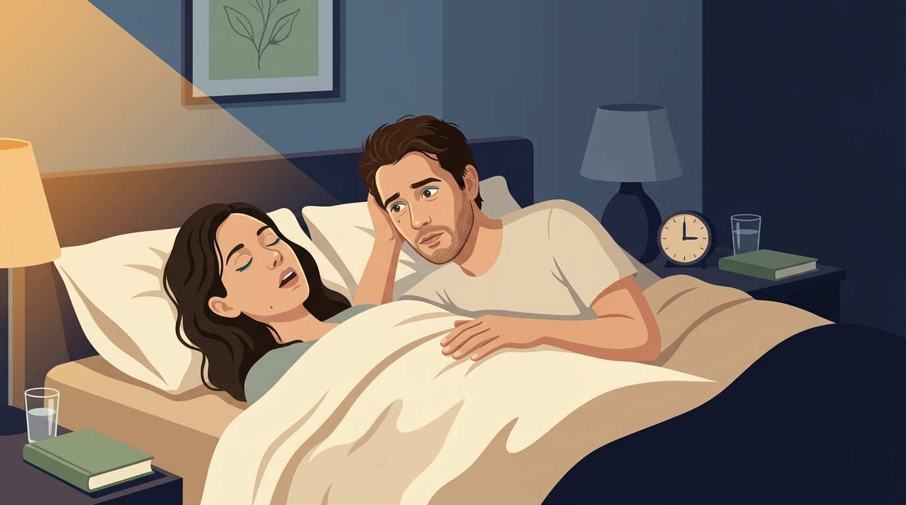
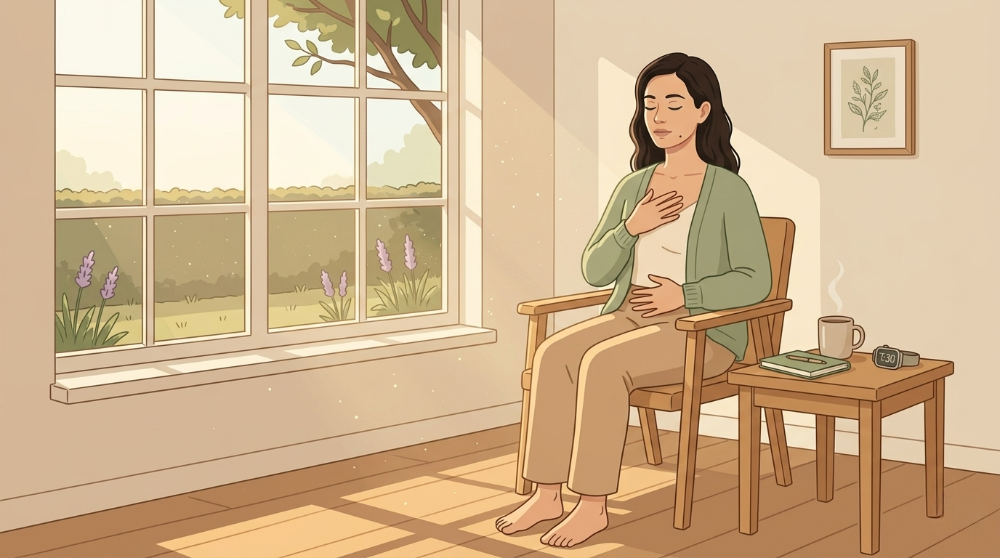

By Rustam Iuldashov
30 years lived experience with chronic migraine | Sources: 34 peer-reviewed references including Nature Medicine, Circulation, European Respiratory Journal, The Journal of Physiology, Sleep Medicine Reviews (meta-analysis), Cephalalgia, Headache, Journal of Neuroscience, PLOS One (systematic review), 4 RCTs | Last updated: May 27, 2026
Medical Review: This content is based on peer-reviewed research from Nature Medicine, Circulation, European Respiratory Journal, The Journal of Physiology, Sleep Medicine Reviews, Cephalalgia, Headache: The Journal of Head and Face Pain, The Journal of Headache and Pain, Journal of Neuroscience, British Journal of Pharmacology, PLOS One, Chest, Frontiers in Neurology, Neuroscience and Biobehavioral Reviews, New England Journal of Medicine, The Anatomical Record, and Sleep and Breathing.
Important Notice: This article is for informational purposes only and does not replace professional medical advice. Mouth breathing during sleep can be a symptom of obstructive sleep apnea — a serious medical condition. Do not attempt mouth taping as a self-treatment for snoring or sleep apnea without a formal sleep evaluation. Always discuss treatment decisions with a neurologist, sleep medicine specialist, or ENT.
Key Takeaways
- Mouth breathing during sleep raises upper airway resistance about 2.5-fold and can multiply apnea-hypopnea episodes thirtyfold, fragmenting the deep sleep that protects migraine brains[5] [6]
- Sleep apnea drives morning headaches in 33% of patients and migraine in 16% — well above general population rates[17] [18]
- Nasal breathing routes sinus-produced nitric oxide into the lungs for better oxygenation, while the migraine-relevant gain is preserved sleep architecture and vagal tone — not raised plasma NO[8] [9]
- Slow nasal breathing at six breaths per minute raises vagal tone and reduces migraine frequency in randomized trials[24] [30] [31]
- The migraine-relevant chemistry is local airway nitric oxide for oxygenation, not the systemic NO that nitroglycerin produces — sinus-derived NO does not flood the bloodstream[9] [11]
- Mouth taping has weak evidence even for mild snoring and is dangerous for anyone with untreated sleep apnea, nasal obstruction, or reflux — get a sleep study first[1] [32]
Mouth taping started as a TikTok beauty hack. Sharper jawlines. Deeper sleep. Fewer migraines. Most of those claims outran the evidence.[1]
But underneath the hype, something is happening that the influencers never bothered to explain. The way you breathe at night — through your nose or through an open mouth — is not cosmetic. It changes airway pressure, blood chemistry, autonomic tone, sleep architecture, and the chemistry of the exact nerve that fires during a migraine attack.[2] [3]
If you wake up with a headache twice a week and you don’t know why, the answer may be leaving your body before sunrise.
Your nose was built for the night shift
The nose is not a backup airway. It is the airway — especially when you sleep.
Three things make it irreplaceable. It warms and humidifies incoming air, protecting the throat lining from the dryness that makes tissue stickier and collapse easier.[4] It produces 2.5 times less airway resistance than the mouth, because opening the mouth drops the soft palate, pulls the tongue back, and narrows the pharynx into a shape that wants to fold shut.[5] [6] [7] In one classic study, switching healthy sleepers from nose to mouth raised their apnea-hypopnea index from 1.5 to 43 events per hour — a thirtyfold collapse in airway stability, in the same people, on the same night.[5]
And then there is the chemistry.

The nitric oxide story (with honest nuance)
In 1995, Jon Lundberg’s team at the Karolinska Institute opened a strange door. The paranasal sinuses, they discovered, produce extraordinary concentrations of nitric oxide — a gas with antimicrobial, vasodilatory, and ciliary effects.[8] When you inhale through your nose, you sweep that sinus-made NO into your lungs, where it improves the match between ventilation and perfusion and lifts oxygen uptake.[9] [10]
Here is where the story gets complicated, and where most wellness content collapses.
Systemic NO donors like nitroglycerin reliably trigger migraines in susceptible people. Circulating NO activates the trigeminovascular system and releases CGRP — the same pathway gepants now block.[11] [12] [13] So shouldn’t more nasal NO be bad?
It would be, if the NO escaped the lungs. It doesn’t. Sinus-derived NO acts locally — antimicrobial in the airway, oxygen-supporting in the alveoli — without flooding the bloodstream with the migraine-triggering kind.[9] The real damage from mouth breathing is not the loss of NO. It is the loss of everything downstream: airway stability, sleep depth, vagal tone, and the chemical balance that keeps a migraine brain quiet.[3] [14]
Mouth breathing wrecks sleep architecture
Migraine brains are sleep-sensitive. Insomnia raises migraine risk, migraine raises insomnia risk, and large Mendelian randomization studies show the relationship runs both ways at the genetic level.[15] [16] Anything that fragments sleep lowers the threshold for attack.
Mouth breathing fragments sleep through several doors at once.
Higher airway resistance means more micro-arousals as your brain works harder to draw breath through a half-collapsed pharynx.[5] [6]
About 33% of people with obstructive sleep apnea wake with headaches. About 16% meet criteria for migraine — half again the general population rate.[17] [18] Mouth breathing is one of the strongest predictors of OSA severity and the single biggest reason CPAP therapy fails.[19]
A dry mouth makes it worse. The drying of oral and pharyngeal mucosa increases the stickiness of the airway lining, so each collapse-and-reopen cycle is more disruptive than the last.[4] About three-quarters of untreated OSA patients wake parched.[4]
And there is the glymphatic system — the brain’s overnight waste-clearance network, which runs almost entirely during deep sleep. Fragmented nights impair glymphatic flow, leaving inflammatory metabolites and CGRP-related signals to pool near the meninges.[20] [21] Animal models show sleep deprivation drives up the pain-sensitization proteins p38, PKA, and P2X3 along trigeminal pathways within days.[22] The trash piles up. The nerve gets louder. The next morning, you wake with what feels like a hangover you never earned.
⚠️ When to see a doctor — not tape your mouth
Mouth breathing during sleep can be a symptom of a serious airway problem that no amount of viral lifehacking will fix. Seek prompt medical evaluation — and skip the tape — if you experience any of these:
— Witnessed pauses in breathing, gasping, or choking during sleep — classic signs of obstructive sleep apnea, which requires a formal sleep study.
— Loud, chronic snoring combined with daytime sleepiness or unrefreshing sleep — even after 8+ hours in bed.
— Morning headaches more than 4–5 days per month, especially if they ease within hours of waking.
— Persistent nasal blockage that makes you unable to breathe comfortably through your nose while awake — this could indicate deviated septum, chronic rhinitis, polyps, or turbinate hypertrophy.
— New or worsening migraines with neurological symptoms (sudden severe headache, vision changes, weakness, confusion, fever, or stiff neck) — call emergency services.
— Children with chronic mouth breathing, snoring, or daytime fatigue — pediatric airway problems need urgent evaluation.
If you have untreated sleep apnea, GERD, severe nasal obstruction, panic disorder, or any difficulty breathing through your nose while awake, do not attempt mouth taping. The 2024 systematic review in PLOS One explicitly warns of asphyxiation risk in these groups[1] [32].
Vagal tone, CO2, and the trigeminal trigger
Here is the link most people miss.
Slow nasal breathing — roughly six breaths per minute — is one of the most reliable ways to raise heart rate variability and tip the autonomic system toward calm.[23] [24] [25] Migraine brains run with lower vagal tone, especially in the hours before an attack.[26]
The brain that breathes calmly stays calm. The brain that breathes through a panicked mouth does not.
Faster breathing drops arterial CO2. Low CO2 — hypocapnia — constricts cerebral vessels and sets up the rebound dilation patterns that migraine brains overreact to.[27] [28] The opposite extreme is no better: when overnight ventilation stalls and CO2 climbs, the International Headache Society recognizes the result as its own diagnosis — headache attributed to hypercapnia.[29]
Two recent randomized trials closed the loop. A 12-week pranayama-based slow-breathing program in 90 chronic migraine patients cut headache frequency by 7.1 days a month versus 4.6 in controls, with measurable rises in heart rate variability.[30] An alternate-nostril breathing trial in 86 migraine patients found the same: significantly fewer attacks, lower disability scores, no adverse events.[31]
Both studies hold their breath in the nose. Not the mouth.
What the evidence actually says about mouth taping
A 2024 systematic review in PLOS One pulled together ten studies on nocturnal mouth taping. Total patients across all of them: 233. Two showed measurable improvements in apnea-hypopnea index and oxygen saturation, but only in mild cases. Several showed nothing. Four explicitly warned of asphyxiation risk in anyone with a blocked nose.[1] [32]
The honest verdict: mouth taping is not a treatment. It is a feedback tool. For a healthy adult who breathes well through the nose but defaults to an open mouth out of habit, a small porous strip may help retrain the pattern. For anyone with untreated sleep apnea, chronic nasal obstruction, reflux, panic disorder, or any difficulty breathing through the nose while awake, the tape can be dangerous.[1] [32] [33]
If you have unexplained morning headaches, the first step is not tape. It is a sleep study.

What to actually do
Fix the airway, not the symptom.
If you snore, wake with a dry mouth, feel unrested after eight hours, or get morning headaches more than once a week, ask for a home sleep apnea test. Treating OSA collapses morning headache prevalence — sometimes within weeks.[17] [34]
Practice slow nasal breathing during the day. Six breaths per minute. Longer exhale than inhale. Ten minutes, twice a day. The trial evidence is modest but real.[30] [31]
Fix the nose before fixing the mouth. Chronic nasal congestion drives mouth breathing automatically. An ENT workup for deviated septum, turbinate hypertrophy, or chronic rhinitis matters infinitely more than any tape.
And if, after all that, you still want to try a strip across your lips — make it small, make it porous, never make it a seal. Start with daytime naps. If you wake gasping, you have your answer.
Your nose has been running the night shift for two hundred thousand years. It is, almost certainly, better at this than your mouth. Listen to it.
Key Takeaways
- Mouth breathing during sleep raises upper airway resistance about 2.5-fold and can multiply apnea-hypopnea episodes thirtyfold, fragmenting the deep sleep that protects migraine brains
- Sleep apnea drives morning headaches in 33% of patients and migraine in 16% — well above general population rates
- Nasal breathing routes sinus-produced nitric oxide into the lungs for better oxygenation, while the migraine-relevant gain is preserved sleep architecture and vagal tone — not raised plasma NO
- Slow nasal breathing at six breaths per minute raises vagal tone and reduces migraine frequency in randomized trials
- The migraine-relevant chemistry is local airway nitric oxide for oxygenation, not the systemic NO that nitroglycerin produces — sinus-derived NO does not flood the bloodstream
- Mouth taping has weak evidence even for mild snoring and is dangerous for anyone with untreated sleep apnea, nasal obstruction, or reflux — get a sleep study first
⚕️ Important Medical Disclaimer
This article is for informational and educational purposes only and does not constitute medical advice, diagnosis, or treatment. The author, Rustam Iuldashov, is not a licensed physician, neurologist, sleep medicine specialist, otolaryngologist, or healthcare professional. He is a patient advocate with 30 years of personal experience living with chronic migraine.
All clinical claims in this article are sourced from peer-reviewed research published in indexed medical journals. Study designs and sample sizes are noted where applicable.
Mouth breathing during sleep can be a symptom of obstructive sleep apnea — a serious medical condition with significant cardiovascular consequences if left untreated. The 2024 systematic review in PLOS One and multiple recent expert statements have warned that mouth taping can pose a serious risk of asphyxiation in people with nasal obstruction, sleep apnea, GERD, or reflux. Do not use mouth taping as a self-treatment for snoring, sleep apnea, or any breathing problem without a formal sleep evaluation. If you experience witnessed apneas, chronic loud snoring, daytime sleepiness, or persistent morning headaches, request a home sleep apnea test or polysomnography from your doctor.
Always consult a qualified healthcare provider — ideally a sleep medicine specialist or ENT — for questions about your individual airway, sleep, or migraine treatment decisions. This content was last reviewed for accuracy on May 27, 2026.
References
- Mahmoud O, Patel C, Brunworth J, Camacho M, et al. “Breaking social media fads and uncovering the safety and efficacy of mouth taping in patients with mouth breathing, sleep disordered breathing, or obstructive sleep apnea: A systematic review.” PLOS One (2025). doi:10.1371/journal.pone.0323643. Study design: Systematic review. n=233 across 10 studies.
- Sim E, Han S. “The impact of mouth breathing on sleep and health in adults: a systematic review.” Sleep and Breathing, 27:1753–1763 (2023). doi:10.1007/s11325-022-02741-9. Study design: Systematic review.
- Vgontzas A, Pavlović JM. “Sleep Disorders and Migraine: Review of Literature and Potential Pathophysiology Mechanisms.” Headache: The Journal of Head and Face Pain, 58:1030–1039 (2018). doi:10.1111/head.13358. Study design: Narrative review.
- Kirkness JP, Madronio M, Stavrinou R, Wheatley JR, Amis TC. “Influence of breathing route on upper airway lining liquid surface tension in humans.” The Journal of Physiology, 547:603–611 (2003). doi:10.1113/jphysiol.2002.032839. Study design: Crossover experiment. n=8.
- Fitzpatrick MF, McLean H, Urton AM, Tan A, O’Donnell D, Driver HS. “Effect of nasal or oral breathing route on upper airway resistance during sleep.” European Respiratory Journal, 22:827–832 (2003). doi:10.1183/09031936.03.00047903. Study design: Crossover trial.
- Hsu YB, Lan MY, Huang YC, Kao MC, Lan MC. “Effect of mouth breathing on upper airway structure in patients with obstructive sleep apnea.” Journal of Clinical Otorhinolaryngology Head and Neck Surgery (2023). doi:10.13201/j.issn.2096-7993.2023.10.001. Study design: MRI cross-sectional. n=49.
- Jung AR, Koh TK, Kim SJ, Lee HJ, Cho JS, Kim CH. “Effect of mouth closure on upper airway obstruction in patients with obstructive sleep apnoea exhibiting mouth breathing: a drug-induced sleep endoscopy study.” Sleep and Breathing (2020). doi:10.1007/s11325-020-02049-6. Study design: DISE clinical trial. n=18.
- Lundberg JO, Farkas-Szallasi T, Weitzberg E, Rinder J, Lidholm J, Anggaard A, et al. “High nitric oxide production in human paranasal sinuses.” Nature Medicine, 1:370–373 (1995). doi:10.1038/nm0495-370. Study design: Experimental.
- Lundberg JO. “Nitric Oxide and the Paranasal Sinuses.” The Anatomical Record, 291:1479–1484 (2008). doi:10.1002/ar.20782. Study design: Review.
- Spector BM, Shusterman DJ, Zhao K. “Nasal nitric oxide flux from the paranasal sinuses.” Current Opinion in Allergy and Clinical Immunology (2018). doi:10.1097/ACI.0000000000000427. Study design: Review.
- Iyengar S, Johnson KW, Ossipov MH, Aurora SK. “CGRP and the Trigeminal System in Migraine.” Headache: The Journal of Head and Face Pain, 59:659–681 (2019). doi:10.1111/head.13529. Study design: Review.
- Akerman S, Williamson DJ, Goadsby PJ. “Nitric oxide synthase inhibitors can antagonize neurogenic and calcitonin gene-related peptide induced dilation of dural meningeal vessels.” British Journal of Pharmacology, 137:62–68 (2002). doi:10.1038/sj.bjp.0704842. Study design: Animal experimental.
- Messlinger K, Lennerz JK, Eberhardt M, Fischer MJ. “CGRP and NO in the trigeminal system: mechanisms and role in headache generation.” Headache: The Journal of Head and Face Pain, 52:1411–1427 (2012). doi:10.1111/j.1526-4610.2012.02212.x. Study design: Preclinical review.
- Tiseo C, Vacca A, Felbush A, Filimonova T, Gai A, Glazyrina T, et al. “Migraine and sleep disorders: a systematic review.” The Journal of Headache and Pain, 21:126 (2020). doi:10.1186/s10194-020-01192-5. Study design: Systematic review.
- Cho SJ, Song TJ, Chu MK. “Sleep and Tension-Type Headache.” Current Neurology and Neuroscience Reports, 19:44 (2019). doi:10.1007/s11910-019-0953-8. Study design: Review.
- Cheng KK, Ouyang D, Liu Y, Xie W. “Exploring the Causal Relationship Between Migraine and Insomnia Through Bidirectional Two-Sample Mendelian Randomization.” Journal of Pain Research, 17:2407–2415 (2024). doi:10.2147/JPR.S460566. Study design: Mendelian randomization.
- Błaszczyk B, Martynowicz H, Więckiewicz M, Straburzyński M, Antolak M, Budrewicz S, et al. “Prevalence of headaches and their relationship with obstructive sleep apnea (OSA) — Systematic review and meta-analysis.” Sleep Medicine Reviews, 73:101889 (2024). doi:10.1016/j.smrv.2023.101889. Study design: Systematic review and meta-analysis.
- Russo A, Bruno A, Trojsi F, Tessitore A, Tedeschi G. “Migraine and sleep apnea in the general population.” The Journal of Headache and Pain, 12:67–72 (2011). doi:10.1007/s10194-011-0379-4. Study design: Population-based cross-sectional. n=21,177.
- Bachour A, Maasilta P. “Mouth breathing compromises adherence to nasal continuous positive airway pressure therapy.” Chest, 126:1248–1254 (2004). doi:10.1378/chest.126.4.1248. Study design: Prospective cohort.
- Vinje V, Zapf B, Ringstad G, Eide PK, Rognes ME, Mardal KA. “Glymphatic System Dysfunction: A Novel Mediator of Sleep Disorders and Headaches.” Frontiers in Neurology, 13:885020 (2022). doi:10.3389/fneur.2022.885020. Study design: Review.
- Schain AJ, Melo-Carrillo A, Strassman AM, Burstein R. “Cortical spreading depression closes paravascular space and impairs glymphatic flow: implications for migraine headache.” Journal of Neuroscience, 37:2904–2915 (2017). doi:10.1523/JNEUROSCI.3390-16.2017. Study design: Preclinical.
- Durham PL, Vause CV. “Calcitonin gene-related peptide (CGRP) receptor antagonists in the treatment of migraine.” CNS Drugs, 24:539–548 (2010). doi:10.2165/11534920-000000000-00000. Study design: Preclinical animal model and review.
- Bernardi L, Porta C, Spicuzza L, Bellwon J, Spadacini G, Frey AW, et al. “Slow Breathing Increases Arterial Baroreflex Sensitivity in Patients With Chronic Heart Failure.” Circulation, 105:143–145 (2002). doi:10.1161/hc0202.103311. Study design: Crossover. n=81.
- Laborde S, Allen MS, Borges U, Dosseville F, Hosang TJ, Iskra M, et al. “Effects of voluntary slow breathing on heart rate and heart rate variability: A systematic review and a meta-analysis.” Neuroscience and Biobehavioral Reviews, 138:104711 (2022). doi:10.1016/j.neubiorev.2022.104711. Study design: Systematic review and meta-analysis.
- Lehrer PM, Gevirtz R. “Heart rate variability biofeedback: how and why does it work?” Frontiers in Psychology, 5:756 (2014). doi:10.3389/fpsyg.2014.00756. Study design: Review.
- Miglis MG. “Migraine and Autonomic Dysfunction: Which Is the Horse and Which Is the Jockey?” Current Pain and Headache Reports, 22:19 (2018). doi:10.1007/s11916-018-0671-y. Study design: Review.
- Fiermonte G, Pierelli F, Pauri F, Cosentino FII, Soccorsi R, Giacomini P. “Cerebrovascular CO2 reactivity in migraine with aura and without aura. A transcranial doppler study.” Acta Neurologica Scandinavica, 92:166–169 (1995). doi:10.1111/j.1600-0404.1995.tb01033.x. Study design: Case-control. n=45.
- Laffey JG, Kavanagh BP. “Hypocapnia.” New England Journal of Medicine, 347:43–53 (2002). doi:10.1056/NEJMra012457. Study design: Review.
- Headache Classification Committee of the International Headache Society. “The International Classification of Headache Disorders, 3rd edition (ICHD-3): 10.1 Headache attributed to hypoxia and/or hypercapnia.” Cephalalgia, 38:1–211 (2018). doi:10.1177/0333102417738202. Study design: Clinical classification.
- Patel A, Sharma S, Kumar P, Jain M. “Yoga-based breathing and relaxation as adjunctive therapy for chronic migraine: A randomized controlled trial on clinical outcomes and autonomic regulation.” Complementary Therapies in Medicine (2025). doi:10.1016/j.ctim.2025.103186. Study design: RCT. n=90.
- Çöme O, Limnili G, Güldal AD. “The impact of alternate nostril breathing on the severity and frequency of migraine attacks: a randomized control trial.” Primary Health Care Research and Development, 26:e15 (2025). doi:10.1017/S1463423625000064. Study design: RCT. n=86.
- Lee YC, Lu CT, Cheng WN, Li HY. “The effect of lip taping for mouth breathing on the quality of sleep, snoring, and daytime sleepiness in obese patients: a randomized controlled trial.” Sleep and Breathing, 27:1413–1420 (2023). doi:10.1007/s11325-023-02878-3. Study design: RCT. n=20.
- Rotenberg BW, Beswick D, Sowerby L. “Nocturnal mouth-taping and social media: A scoping review of the evidence.” American Journal of Otolaryngology, 46:104314 (2024). doi:10.1016/j.amjoto.2024.104314. Study design: Scoping review.
- Kristiansen HA, Kværner KJ, Akre H, Øverland B, Russell MB. “Sleep apnoea headache in the general population.” Cephalalgia, 32:451–458 (2012). doi:10.1177/0333102411431900. Study design: Cross-sectional population study. n=297.

How We Create Content
- Peer-reviewed sources only. This article cites Nature Medicine, Circulation, European Respiratory Journal, The Journal of Physiology, Sleep Medicine Reviews, Cephalalgia, Headache: The Journal of Head and Face Pain, The Journal of Headache and Pain, Journal of Neuroscience, British Journal of Pharmacology, PLOS One, Chest, Frontiers in Neurology, Neuroscience and Biobehavioral Reviews, New England Journal of Medicine, The Anatomical Record, and Sleep and Breathing.
- Study transparency. Study design and sample sizes noted for all clinical references.
- Source verification. All 34 claims backed by numbered references with DOI links.
- Experience + Science. 30 years personal migraine experience combined with peer-reviewed evidence.
- Regular updates. Articles reviewed when significant new research emerges.
- No conflicts of interest. No funding from mouth tape manufacturers, CPAP/sleep apnea diagnostic companies, breathing app developers, supplement makers, or pharmaceutical companies.
Track Your Sleep. See the Patterns. Breathe Through Your Nose.
Migraine Companion lets you log sleep quality, morning headaches, dry-mouth wakings, and prodrome signals alongside your attack diary — turning scattered nights into visible patterns. The first step toward fixing your airway is seeing the data. Built by someone who has lived this for 30 years.
Last reviewed: May 2026
Next scheduled review: November 2026